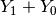

3.4. What model did I pass to the solver?
The model we developed to solve the cryptarithmetic puzzle (see The cryptarithmetic puzzle problem and a first model) was quite simple.
The first model proposed to solve the Golumb Ruler Problem in the two previous sections is more complex. We suppose our model is theoretically correct. How do we know we gave the right model to the solver, i.e. how do we know that our implementation is correct? In this section, we present two tools to debug the model we passed to the solver: the DebugString() method and via the default command line flags of the CP solver.
3.4.1. Inspect objects with DebugString()
You can find the code in the file tutorials/cplusplus/chap3/golomb2.cc
Most of the mathematical classes in or-tools inherit from the BaseObject class. Its only public method is a virtual DebugString(). If you are curious or just in doubt about the object you just constructed, DebugString() is for you.
Let’s have a closer look at the constraints that model the inner structure of the Golomb ruler of order  :
:
const int n = 5;
...
for (int i = 2; i <= n - 1; ++i) {
for (int j = 0; j < n-i; ++j) {
...
c = s.MakeEquality(Y[index], v2);
s.AddConstraint(c);
LOG(INFO) << c->DebugString();
}
}
The output is:
...: Y_4(1..24) == Var<(Y_1(1..24) + Y_0(1..24))>(2..48)
...: Y_5(1..24) == Var<(Y_2(1..24) + Y_1(1..24))>(2..48)
...: Y_6(1..24) == Var<(Y_3(1..24) + Y_2(1..24))>(2..48)
...: Y_7(1..24) == Var<(Y_2(1..24) + Var<(Y_1(1..24) +
Y_0(1..24))>(2..48))>(3..72)
...: Y_8(1..24) == Var<(Y_3(1..24) + Var<(Y_2(1..24) +
Y_1(1..24))>(2..48))>(3..72)
...: Y_9(1..24) == Var<(Y_3(1..24) + Var<(Y_2(1..24) +
Var<(Y_1(1..24) + Y_0(1..24))>(2..48))>(3..72))>(4..96)
These are exactly the constraints listed in Figure The inner structure of a Golomb ruler of order 5..
3.4.2. Use the default flags
By default, the CP solver is able to return some information about the model. If you try
./golomb1 --help
in the terminal, you get all possible command line flags. For the file constraint_solver.cc, these are:
Flags from src/constraint_solver/constraint_solver.cc:
-cp_export_file (Export model to file using CPModelProto.)
type: string default: ""
-cp_model_stats (use StatisticsModelVisitor on model before solving.)
type: bool default: false
-cp_name_cast_variables (Name variables casted from expressions)
type: bool default: false
-cp_name_variables (Force all variables to have names.)
type: bool default: false
-cp_no_solve (Force failure at the beginning of a search.)
type: bool default: false
-cp_print_model (use PrintModelVisitor on model before solving.)
type: bool default: false
-cp_profile_file (Export profiling overview to file.)
type: string default: ""
-cp_show_constraints (show all constraints added to the solver.)
type: bool default: false
-cp_trace_propagation (Trace propagation events (constraint and demon
executions, variable modifications).)
type: bool default: false
-cp_trace_search (Trace search events)
type: bool default: false
-cp_verbose_fail (Verbose output when failing.)
type: bool default: false
We are interested in the constraints. Invoking
./golomb1 --n=5 --cp_no_solve --cp_show_constraints
gives us:
...: BoundsAllDifferent(Y_0(1..24), Y_1(1..24), Y_2(1..24), Y_3(1..24),
Y_4(1..24), Y_5(1..24), Y_6(1..24), Y_7(1..24), Y_8(1..24),
Y_9(1..24))
This is the AllDifferent constraint on bounds where we see all the variables with their initial domains.
Then:
...: cast((Y_1(1..24) + Y_0(1..24)), Var<(Y_1(1..24) + Y_0(1..24))>
(2..48))
The cast to transform the sum  into an IntVar.
And then:
...: Y_4(1..24) == Var<(Y_1(1..24) + Y_0(1..24))>(2..48)
...: Y_5(1..24) == Var<(Y_2(1..24) + Y_1(1..24))>(2..48)
...: Y_6(1..24) == Var<(Y_3(1..24) + Y_2(1..24))>(2..48)
...: Y_7(1..24) == Var<(Y_2(1..24) + Var<(Y_1(1..24) +
Y_0(1..24))>(2..48))>(3..72)
...: Y_8(1..24) == Var<(Y_3(1..24) + Var<(Y_2(1..24) +
Y_1(1..24))>(2..48))>(3..72)
...: Y_9(1..24) == Var<(Y_3(1..24) + Var<(Y_2(1..24) + Var<(Y_1(1..24) +
Y_0(1..24))>(2..48))>(3..72))>(4..96)
...: Forcing early failure
...: Check failed: (collector->solution_count()) == (1)
Aborted
All this output was generated from the following line in constraint_solver.cc:
LOG(INFO) << c->DebugString();
where c is a pointer to a Constraint.
Invoking
./golomb1 --n=5 --cp_no_solve --cp_model_stats
we obtain some statistics about the model:
...: Model has:
...: - 17 constraints.
...: * 1 AllDifferent
...: * 6 Equal
...: * 10 CastExpressionIntoVariable
...: - 20 integer variables.
...: - 10 integer expressions.
...: * 10 Sum
...: - 10 expressions casted into variables.
...: - 0 interval variables.
...: - 0 sequence variables.
...: - 2 model extensions.
...: * 1 VariableGroup
...: * 1 Objective
Indeed, we have 1 AllDifferent constraint, 6 equality constraints and 10 IntVar variables. Where does the rest come from?
To construct the equality constraints, we cast 10 times integer expressions into IntVar (remember the ...->Var() calls), hence the 10 integer expressions, the 10 supplementary IntVar variables and the 10 sums. The 2 model extensions are the objective OptimizeVar variable and the std::vector array of IntVar variables (VariableGroup).
Try the other flags!
Google or-tools |
User's Manual
Google search
Welcome
Tutorial examples
Current chapter
3. Using objectives in constraint programming: the Golomb ruler problem
Previous section
3.3. An implementation of the first model
Next section
3.5. Some global statistics about the search and how to limit the search